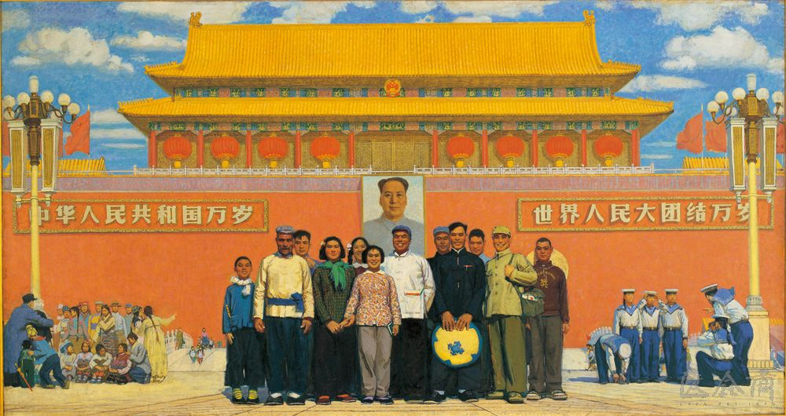

In this painting a large group of people with varying ages and backgrounds are pictured. They are posed in front of Tiananmen Square which is a national symbol. Mao Zedong is framed in the center representing people united under him. Navy soldiers are shown on the right along with a group of minorities to the left. This painting wants to convey the image of a large family of Chinese people. The painting as a whole shows a society in harmony with so many different people interacting in an easygoing way with the image of Mao in the center. It’s implied this peace can be attributed to him. Here a strong Chinese identity is established which the future pieces in this exhibit will question.

In Front of Tiananmen, by Sun Zixi. Oil on Canvas, 155 x 28cm. Beijing Chinese National Art Gallery. 1964